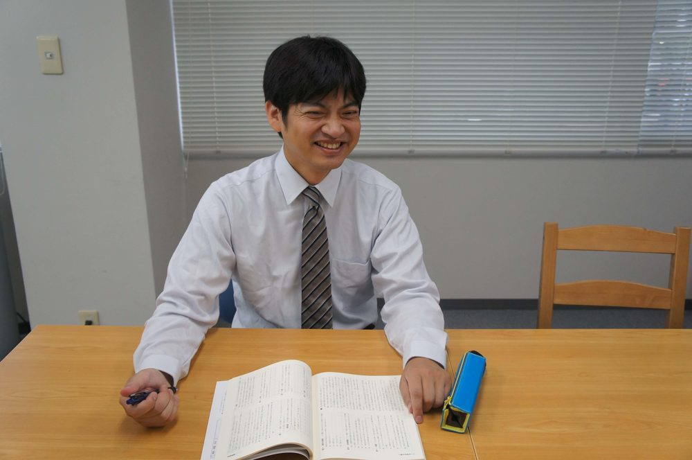

桜灯塾の指導は、塾長が設計し、管理します。学生講師は、その計画のもとで一人ひとりを教える存在です。講師は全員が中学受験を勝ち抜いた経験者で、中心は大阪公立大学医学部医学科の学生です。下の名簿の「出身高校」の欄は、そのまま講師自身の中学受験の合格実績です。在籍講師30名以上のうち、一部を公開しています。講師は在籍しているだけではなく、全員が週1回以上、実際に指導しています。

内田 憲一うちだ けんいち
桜灯塾 塾長／もものはな株式会社 代表取締役
私は、司法試験に落ちた経験があります。足りなかったのは才能ではなく、「戦略」と「量の管理」でした。中学受験も、この2つがすべてです。12歳のお子様が、自分で戦略を立て、勉強量を管理することはできません。だからこそ大人が設計し、管理する。それが桜灯塾の考え方です。
そして合格は、塾だけの仕事ではありません。生徒・ご家庭・塾の三者がチームになって、初めて届くものだと考えています。
教材づくりにも携わり、受験算数の問題集「日々トレ算数」を、赤本の出版社である英俊社と作成しました。英俊社のプリント教材システム「KAWASEMI Lite」の導入塾で、同社のサイトには代表 内田憲一の「お客様の声」が掲載されています。
2017年度以来の合格者全員に、最初から最後まで関わってきたのは塾長だけです。講師が入れ替わっても、合格者一人ひとりを見てきた経験の引き出しは塾長に蓄積され、次の受験生の設計に活かされます。
保護者面談は、塾長が随時・無料で対応しています。
講師の名前は、アルファベットと「先生」の表記で公開しています（実名・顔写真は掲載していません）。出身高校は、いずれも講師が中学受験で合格した学校です。
| 講師 | 出身高校（＝中学受験の合格校） | 在籍大学・学部 |
|---|---|---|
| A先生 | 西大和学園 | 大阪公立大学 医学部医学科 6回生 |
| B先生 | 東大寺学園 | 京都大学大学院 工学研究科 2回生 |
| C先生 | 大阪星光学院 | 大阪公立大学 医学部医学科 6回生 |
| D先生 | 昭和薬科大学附属 | 大阪公立大学 医学部医学科 6回生 |
| E先生 | 清教学園 | 大阪公立大学 医学部医学科 6回生 |
| F先生 | 洛南 | 大阪公立大学 医学部医学科 5回生 |
| G先生 | 四天王寺 | 兵庫医科大学 医学部医学科 5回生 |
| H先生 | 四天王寺 | 奈良県立医科大学 医学部医学科 5回生 |
| I先生 | 北野高校 | 大阪公立大学 医学部医学科 5回生 |
| J先生 | 清風 | 大阪公立大学 医学部医学科 5回生 |
| K先生 | 東大寺学園 | 大阪公立大学 医学部医学科 4回生 |
| L先生 | 高槻 | 大阪公立大学 医学部医学科 4回生 |
| M先生 | 東大寺学園 | 京都大学 医学部医学科 4回生 |
| N先生 | 南山女子部 | 大阪公立大学 医学部医学科 4回生 |
| O先生 | 西大和学園 | 大阪公立大学 医学部医学科 4回生 |
| P先生 | ラ・サール | 大阪公立大学 医学部医学科 4回生 |
| Q先生 | 清風南海 | 大阪公立大学 医学部医学科 4回生 |
| R先生 | 大阪星光 | 大阪公立大学 医学部医学科 4回生 |
| S先生 | 西大和学園 | 大阪公立大学 医学部医学科 4回生 |
| T先生 | 広島修道 | 大阪公立大学 医学部医学科 3回生 |
| U先生 | 咲くやこの花 | 大阪公立大学 医学部医学科 3回生 |
| V先生 | 灘 | 大阪公立大学 医学部医学科 3回生 |
| W先生 | 天王寺 | 大阪公立大学 医学部医学科 3回生 |
| X先生 | 神戸女学院 | 大阪公立大学 医学部医学科 2回生 |
| Y先生 | 清風南海 | 大阪公立大学 医学部医学科 2回生 |
| Z先生 | 四天王寺 | 大阪公立大学 医学部医学科 2回生 |
| AA先生 | 東大寺学園 | 京都府立医科大学 2回生 |
| AB先生 | 愛光学園 | 大阪公立大学 医学部医学科 2回生 |
| AC先生 | 東大寺学園 | 大阪公立大学 医学部医学科 1回生 |
| AD先生 | 四天王寺 | 京都大学 経済学部 1回生 |
※ 在籍講師30名以上のうち一部を公開しています。北野・天王寺など公立トップ校出身の講師も在籍しています。
相性のよい講師に続けて教わりたい場合は、講師指名が利用できます。指名料は授業料に1時間あたり500円の追加です（税込）。週2回からは担当講師がつき、計画管理と宿題まで一貫して担います。ご希望の講師がいる場合は、お申し込み時にご相談ください。
体験授業（集団個別）では、実際の講師の授業を1回2時間×3回受けていただけます。13,200円（税込）。お子様と講師の相性や、少人数個別の進み方をご確認ください。